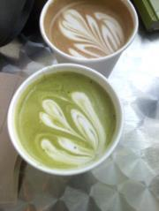

 A group for artists and authors in any media to network. Come find information on writing software, local creative events, digital self-publishing, and more! We meet in the upstairs balcony of the cafe.
Online bulletin board for last-minute updates and exercise document sharing:
Google Group WAG SF
Bring a laptop or drawing paper and join us in various inspiring sessions and collaborations on the most natural art-writer mashup of all: comics!
Conversations may veer toward video game creation as caffeine runs out (or ramps up!).